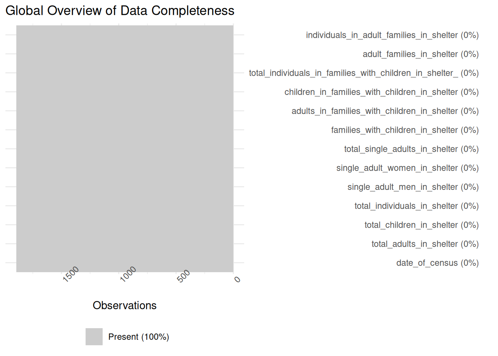
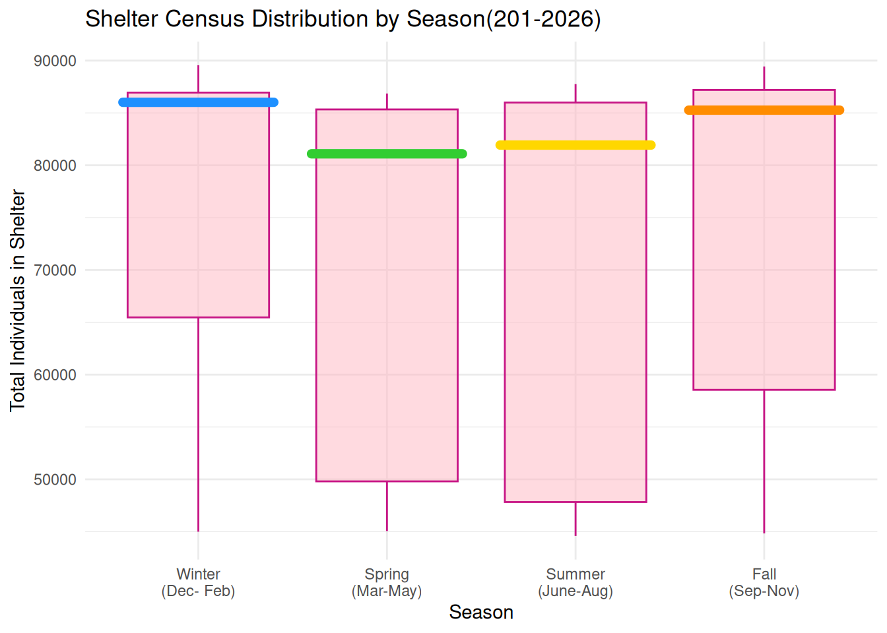
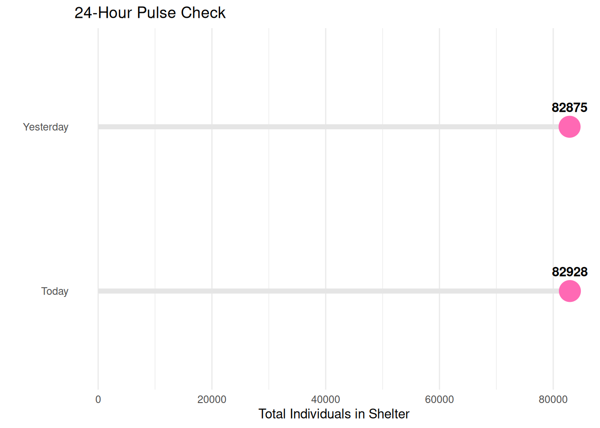

library(tidyverse)
library(ggplot2)
df <- read_csv("https://data.cityofnewyork.us/resource/k46n-sa2m.csv?$limit=5000")
#nrow(df)
#head(df)
#str(df)
#summary(df)3 NYC Department of Homeless Services Shelter Census (2021-2026)
Perpetua Senatus
3.1 Introduction
Homelessness remains one of the most pressing social and administrative challenges facing New York City, impacting thousands of individuals and families daily. My interest in this topic stems from my daily commute; as someone who takes the train to campus, I am frequently confronted with the human reality of this crisis. I often see individuals sleeping on the trains and encounter families with children asking for help. These experiences left me questioning the system: are the shelters simply full, or are there other barriers to entry?. To better understand these questions, I chose to study the NYC Department of Homeless Services (DHS) Daily Report because it provides a transparent, high-frequency look at the scale of the city’s shelter system and the specific demographics it serves. This project aims to perform detective work through exploratory data analysis to uncover trends in shelter residency. Specifically, I am investigating how the total population has fluctuated over the last few years, whether there are seasonal patterns in census counts, and which subgroups are most responsible for shifts in the overall shelter population.
3.2 Data
3.2.1 Description
The data is provided by the New York City Department of Homeless Services(DHS) and represents an official daily census of families and individuals residing within the city’s shelter system. The dataset is updated daily on the NYC Open Data portal. As of the latest records used in this analysis, the dataset contains 13 columns and over 1800 rows, with each row representing one Date of Census. The key variables include the Total Individuals in Shelter (the sum of all Adults and Children in the system) and Demographic Breakdowns such as Single Adult Men/Women and Families with Children. The dataset used for this study begins on March 1, 2021, and continues through 2026.
Dataset Link: DHS Daily Report- NYC Open Data
3.2.2 Missing value analysis
library(tidyverse)
library(lubridate)
df$date_of_census <-as.Date(df$date_of_census, format = "%m/%d/%Y")
#class(df$date_of_census)
#range(df$date_of_census)
#head(df$date_of_census)Graph 1 : This visualization confirms that the dataset is 100% complete across all 13 variables. The DHS maintains a highly reliable and consistent daily reporting process, ensuring no gaps in the timeline:
library(naniar)
vis_miss(df) +
labs(title="Global Overview of Data Completeness") +
coord_flip() 
Graph 2 : A variable-by-variable check further confirms that every key metric has zero missing values. This level of integrity allows us to trust that the population totals are not being skewed by under-reporting in any specific demographic group:
gg_miss_var(df) +
labs(title ="Missing values by variable",
y ="Number of missing values") +
ylim(0,10)
Summary of patterns: The analysis reveals a complete case structure, with zero missing values identified across the 1800+ observations. This perfect completeness is likely due to the nature of the data: as an official daily census, each entry is a finalized, aggregated total for the entire shelter system, rather than raw survey data that might contain human error or omissions.
3.3 Results
3.3.1 Question 1: How has the NYC Shelter Population evolved between 2021 and 2026?
3.3.1.1 Overview of Shelter Capacity
To understand the current state of the city’s resources, we must first track the overall scale of the shelter system over the last five years. A sharp, steady increase suggests that while “Right to Shelter” laws provide a legal safety net, the volume of demand is now testing the limits of available city resources:
library(lubridate)
library(scales)
ggplot(df, aes(x = date_of_census ,
y = total_individuals_in_shelter))+
geom_line(color="grey") +
geom_smooth(method = "loess",
color = "deeppink",
se = FALSE) +
scale_y_continuous(labels = comma) +
labs(title="NYC Shelter Population Trend (2021-2026)",
x = "Year",
y= "Total Individuals") +
theme_bw()
After a period of relative stability in 2021, there is a massive surge starting in late 2022 that continues into 2026, with the population nearly doubling ~ from 45,000 to over 80,000 individuals. This rapid growth suggests that the pace of people entering the system significantly exceeds the city’s ability to transition them into permanent housing.
3.3.1.2 Distribution of the Shelter Population by Year
To see how the daily census has changed over time, we can also look at the distribution of the population for each year:
library(ggridges)
df |>
mutate(Year = factor(year(date_of_census))) |>
ggplot(aes(x = total_individuals_in_shelter, y= Year, fill = Year)) +
geom_density_ridges(alpha = 0.7, color = "white") +
scale_fill_manual(values = c("#FFB6C1", "#FF69B4", "#FF1493", "#C71585", "#8B008B","#4B0082")) +
labs(title="Evolution of the Shelter Population by Year",
x = "Total Individuals in Shelter",
y = "Year") +
theme_ridges()
This ridgeline plot reveals that in 2021, the system was consistently centered around 45000 people. However, by 2024 and 2025, these peaks have flattened and migrated significantly to the right, indicating that a much larger population has become the standard. Essentially, the rightward shift of the surveys proves the system is operating on a completely different scale than it was a few years ago.
After some research, I found out that the dramatic center of gravity shift in the preceding graphs is not random; it is caused by an external humanitarian crisis. According to this article, the unprecedented census surge starting in 2023 coincides with the arrival of asylum seekers in New York City. This crisis was compounded by some preexisting factors: a lack of affordable housing, the expiration of pandemic-era protections, and rising evictions.
3.3.2 Question 2: How has the composition of the Shelter System changed over the last five years?
3.3.2.1 Shifts in Household Types
By breaking the population into three distinct demographic groups (Single Adults, Families with Children, and Adult-Only Families), we can see how the fundamental composition of NYC’s shelters has transformed over the last five years:
library(tidyverse)
library(lubridate)
df_total_comp <- df |>
select(date_of_census,
total_single_adults_in_shelter, total_individuals_in_families_with_children_in_shelter_, individuals_in_adult_families_in_shelter) |>
rename("Single Adults" = total_single_adults_in_shelter,
"Families with children" = total_individuals_in_families_with_children_in_shelter_,
"Adult-Only Families" = individuals_in_adult_families_in_shelter) |>
pivot_longer(cols = -date_of_census, names_to = "Group", values_to = "Count")
ggplot(df_total_comp, aes(x = date_of_census, y = Count, fill = Group)) +
geom_area(alpha = 0.85) +
scale_fill_manual(values = c(
"Single Adults" = "#FF1493",
"Families with children" = "#FFB6C1",
"Adult-Only Families" ="#8B1C62")) +
labs(title = "Evolution of NYC Shelter Residency by Household Type (2021-2026)",
x = "Year",
y = "Total Individuals",
fill = "Demographic Group") +
theme_minimal() +
theme (
legend.position = "bottom",
panel.grid.minor = element_blank()
)
This stacked area chart reveals a major shift in who uses NYC shelters. In 2021, the numbers were fairly stable between Single Adults and Families with Children. However, starting in late 2022, the Families with Children exploded, quickly becoming the largest group and pushing the total population past 80,000. While Adult-Only Families stayed small and steady, the overall data shows that the crisis has shifted from an individual issue into a massive humanitarian challenge for families, requiring a whole new set of city resources.
3.3.2.2 Growth Rates by Demographic Group
While the daily census tracks the current population, indexing the data allows us to measure the speed of the crisis. By setting every demographic group to a baseline of 100 at the start of 2021, this visualization identifies which group has experienced the most explosive rates of growth over the last five years:
library(tidyverse)
library(lubridate)
df_final_growth <- df |>
arrange(date_of_census) |>
mutate(
Men_Index = (single_adult_men_in_shelter / first(single_adult_men_in_shelter)) * 100,
Women_Index = (single_adult_women_in_shelter / first(single_adult_women_in_shelter)) * 100,
Children_Index = (total_children_in_shelter / first( total_children_in_shelter)) * 100,
Parents_Index = (adults_in_families_with_children_in_shelter/first(adults_in_families_with_children_in_shelter)) * 100,
AdultFamily_Index = (individuals_in_adult_families_in_shelter/ first(individuals_in_adult_families_in_shelter)) * 100) |>
filter(date_of_census == max(date_of_census))|>
pivot_longer(cols = ends_with("Index"), names_to = "Demographic", values_to = "Growth") |>
mutate(Demographic = fct_recode(Demographic,
"Children" = "Children_Index",
"Parents" = "Parents_Index",
"Single Women" = "Women_Index",
"Single Men" ="Men_Index",
"Adult-Only Families" = "AdultFamily_Index"))
ggplot(df_final_growth, aes(x = fct_reorder(Demographic, Growth, .desc = TRUE),
y = Growth, fill = Demographic)) +
geom_col(alpha = 0.8, show.legend = FALSE) +
geom_text(aes(label = round(Growth, 0)), vjust = -0.5, fontface = "bold") +
geom_hline(yintercept = 100,linetype ="dashed", color="grey50")+
scale_fill_manual(values = c("Parents" ="#8B1C62",
"Children" = "#C71585",
"Single Women"= "#FF1493",
"Single Men"="#FF69B4",
"Adult-Only Families" = "#FFB6C1"))+
scale_y_continuous(expand = expansion(mult = c(0, 0.1))) +
labs(title = " Growth Rates by Demographic Group (2021-2026)",
x = "Demographic Group",
y = "Indexed Growth(100 Baseline)") +
theme_classic()
The number of Parents and Children has skyrocketed, nearly doubling compared to Single Adults and Adult-Only Families, who have grown at a much slower pace. This ranking proves that the current situation is fundamentally a family and youth crisis. The city’s primary challenge has shifted toward housing thousands of new family households rather than just focusing on individual adults.
3.3.2.3 Trends in Single Adult Residency
While the growth of family units has redefined the shelter system, the population of single individuals remains a substantial and distinct demographic. By isolating Single Men and Single Women into a faceted yearly view, we can track how the gender gap has evolved alongside the broader crisis:
library(tidyverse)
library(lubridate)
df_gender <- df |>
select(date_of_census,
single_adult_men_in_shelter,
single_adult_women_in_shelter)|>
rename("Single Men" = single_adult_men_in_shelter,
"Single Women" = single_adult_women_in_shelter)|>
pivot_longer(cols = -date_of_census, names_to = "Gender", values_to = "Count") |>
mutate(Year = year(date_of_census))
ggplot(df_gender, aes(x = date_of_census, y = Count, color = Gender)) +
geom_line(linewidth = 1.2) +
facet_wrap(~Year, scales ="free_x", nrow =1) +
scale_color_manual(values = c("Single Men" = "#FFB6C1",
"Single Women" = "#FF1493")) +
labs(title = "The Single Adult Gender Gap (2021-2026)",
x = "Timeline by Year",
y = "Total Individuals",
color = "Demographics") +
theme_minimal() +
theme(legend.position = "bottom",
strip.background = element_rect(fill = "grey95"),
axis.text.x = element_blank())
The faceted lines show that while Single Men consistently outnumber Single Women in the shelter system, both groups follow nearly identical trajectories. The gap between the two lines remains constant even through the spikes of 2023 and into 2026. This pattern suggests that the factors driving single individuals into the shelter system (such as the rising cost of housing or unemployment) are affecting both genders simultaneously rather than impacting one group disproportionately.
3.3.3 Question 3: Does weather impact shelter occupancy?
3.3.3.1 Analyzing Seasonal Patterns
This analysis explores whether the shelter population fluctuates based on the time of the year. By grouping the census into seasons, we can determine if there are predictable spikes during the colder months and compare how the population is distributed throughout the year:
library(lubridate)
df_seasonal <- df |>
mutate(Month_num = month(date_of_census),
Season = case_when(
Month_num %in% c(12, 1, 2) ~ "Winter",
Month_num %in% c(3, 4, 5) ~ "Spring",
Month_num %in% c(6, 7, 8) ~ "Summer",
Month_num %in% c(9, 10, 11) ~ "Fall"),
Season = fct_relevel(Season, "Winter", "Spring", "Summer", "Fall"))
ggplot(df_seasonal, aes(x = Season, y = total_individuals_in_shelter)) +
geom_boxplot(fill = "#FFB6C1" , color ="#C71585", alpha = 0.5, show.legend = FALSE, outlier.alpha = 0.2) +
stat_summary(fun = median, geom = "segment",
aes(x = as.numeric(Season) - 0.4,
xend = as.numeric(Season) + 0.4,
yend = after_stat(y), color = Season),
size = 2.5, lineend = "round", show.legend = FALSE) +
scale_color_manual(values = c("Winter" ="#1E90FF",
"Spring" = "#32CD32",
"Summer"="#FFD700",
"Fall" = "#FF8C00")) +
scale_x_discrete(labels = c ("Winter\n(Dec- Feb)", "Spring\n(Mar-May)", "Summer\n(June-Aug)", "Fall\n(Sep-Nov)")) +
labs(
title = "Shelter Census Distribution by Season(201-2026)",
x = "Season",
y = "Total Individuals in Shelter") +
theme_minimal()
Using boxplots to track seasonal trends confirms that Winter (Dec-Feb) remains the peak occupancy period for the shelter system. Notably, Fall (Sep-Nov) shows a higher median population than Spring and Summer. This likely indicates a pre-winter surge, where dropping temperatures in late autumn prompt more individuals to seek indoor safety before the onset of extreme cold.
3.3.3.2 Emergency Response: Analyzing the 2026 Snow Days
January 25 - 26, 2026 Blizzard
I vividly remember the major blizzards earlier this year, when my classes moved online on January 26 and February 23. These snow days provide the perfect opportunity to evaluate the real-world effectiveness of the city’s Code Blue emergency response. By isolating these specific windows (January 22-29 and February 19-26), we can visualize whether the shelter population increased as outreach teams moved homeless people off the streets and into safety during extreme weather:
library(tidyverse)
library(lubridate)
jan_blizzard <- df |>
filter(date_of_census >="2026-01-22" & date_of_census <= "2026-01-29") |>
mutate(Event ="Jan Blizzard")
feb_blizzard <- df |>
filter(date_of_census >= "2026-02-19" & date_of_census <= "2026-02-26")|>
mutate(Event ="Feb Blizzard")
blizzard_data <- bind_rows (jan_blizzard, feb_blizzard)
blizzard_data$Event <- factor(blizzard_data$Event, levels = c("Jan Blizzard", "Feb Blizzard"))
ggplot(blizzard_data, aes(x = date_of_census, y= total_individuals_in_shelter, group = Event)) +
geom_line(color ="brown", size = 1) +
geom_point(aes(color = date_of_census %in% as.Date(c("2026-01-25", "2026-01-26", "2026-02-22","2026-02-23"))), size = 4) +
scale_color_manual( name = "Day Status",
values = c("FALSE" = "#FFB8C1", "TRUE" = "#FF1493"),
labels = c("FALSE" ="Regular Days", "TRUE" ="Blizzard Days")) +
facet_wrap(~Event, scales = "free_x") +
scale_y_continuous(labels = scales::comma) +
labs (
title ="Code Blue Impact: Before, During, and After Peak Blizzard Days (2026)",
x = "Census Date",
y ="Total Individuals in Shelter") +
theme_minimal() +
theme(legend.position = "bottom",
strip.text = element_text(face ="bold", size = 12),
axis.text.x = element_text(angle = 45, hjust =1))
This analysis reveals the city’s emergency response in action. In both January and February, the census spikes exactly as the blizzards hit, confirming that emergency outreach successfully transitions people off the streets during a life-threatening cold. The subsequent drop-offs show the system returning to its baseline, confirming that DHS can effectively scale capacity to meet immediate crisis needs. The lower peak in February compared to January may even suggest that some individuals transitioned from emergency beds into more permanent housing placements as the winter progressed.
3.3.4 The 24-Hour Difference
As of today, one of the most important metrics is to find what happened in the last 24 hours. By isolating today and yesterday, this tiny window captures the reality of New Yorkers moving through the system right now as we transition into another season:
library(tidyverse)
library(lubridate)
df_today_vs_yesterday <- df |>
select(date_of_census,
total_individuals_in_shelter) |>
slice_max(date_of_census, n = 2) |>
mutate(Day_Label = ifelse(date_of_census == max(date_of_census), "Today", "Yesterday"))
ggplot(df_today_vs_yesterday, aes ( x = total_individuals_in_shelter, y = Day_Label)) +
geom_segment(aes(x = 0, xend = total_individuals_in_shelter, yend = Day_Label),
color = "grey90", linewidth = 2) +
geom_point(size = 8, color = "#FF69B4") +
geom_text(aes(label = total_individuals_in_shelter), vjust = -1.5, fontface = "bold") +
labs(title ="24-Hour Pulse Check",
x = "Total Individuals in Shelter",
y = "") +
theme_minimal() +
theme(panel.grid.major.y = element_blank()) 
latest <- df |>
slice_max(date_of_census, n = 2) |>
arrange(date_of_census)
diff_val <- latest$total_individuals_in_shelter[2] - latest$total_individuals_in_shelter[1]
status_word <- ifelse(diff_val >= 0, "an increase of", "a decrease of")
cat("Daily Census Update:", format(latest$date_of_census[2], "%B %d, %Y"), "\n",
"The system recorded", status_word, abs(diff_val), "individuals since yesterday.")Daily Census Update: May 07, 2026
The system recorded an increase of 53 individuals since yesterday.This is a real-time calculation to understand the day-to-day pressure on city resources. The resulting number varies daily, revealing whether the census is currently growing, shrinking, or staying stable. This snapshot provides a high-frequency look at the operational heartbeat of the NYC shelter system.
Summary of the most revealing findings of my analysis: The most striking discovery in this analysis is the Demographic flip. While the shelter system was historically dominated by single individuals, the current crisis is almost entirely driven by families with children. Since late 2022, this group has seen explosive growth, nearly doubling in size. Furthermore, my analysis of the 2026 Snow Days proves that the city’s Code Blue emergency response is highly effective at transitioning people into safety during life-threatening cold, even though the system remains at a high-capacity baseline regardless of the season.
3.4 Conclusion
The main takeaway from this exploration is that NYC’s shelter system has evolved from an individual housing problem into a massive humanitarian challenge for families. The unprecedented surge in 2023 indicates that the city can no longer rely on old strategies; it requires resources specifically tailored for households with children, rather than just beds for single adults. This analysis has its limits; because we are working with high-frequency daily aggregates, the data is numbers-heavy but identity-light. For instance, while we know the total number of children, the dataset does not provide a gender breakdown for minors, making it impossible to see if the surge affects boys and girls differently. Additionally, it is difficult to calculate an accurate average of children per family unit without knowing the specific makeup of every household. The current reporting also groups all parents and caregivers into a single “Guardian” category, which prevented me from isolating the specific trends for single mothers versus single fathers. Beyond the raw totals, the data leaves me with many unanswered questions about the true makeup of these households: Is a family typically a father and his children or a mother? , or perhaps two children being cared for by an aunt? When we look at adult-only families, are we seeing couples or is it a group of cousins or siblings sticking together for survival?. I found myself wanting to go deeper into these relationships to understand the human story behind the numbers, but the current dataset keeps these family bonds invisible. For future research, I would love to see data on Length of Stay to understand how quickly people are actually exiting the system. Ultimately, this project taught me that homelessness is season-proof; whether it’s a January Blizzard or a mild May morning, the pressure on NYC’s resources is a 24-hour reality that requires constant intervention.